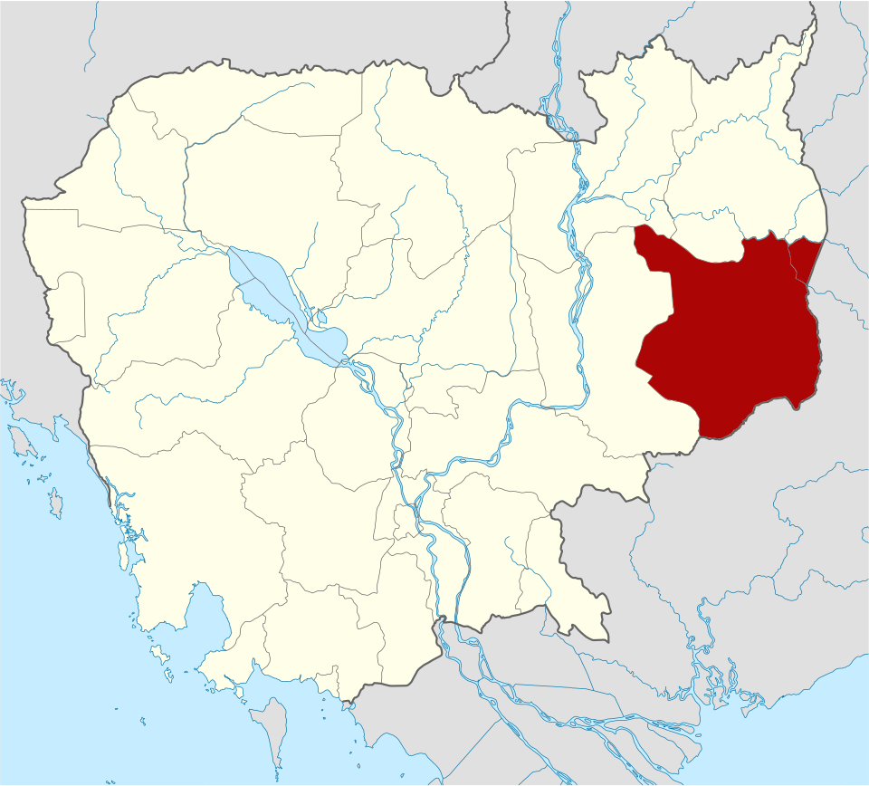
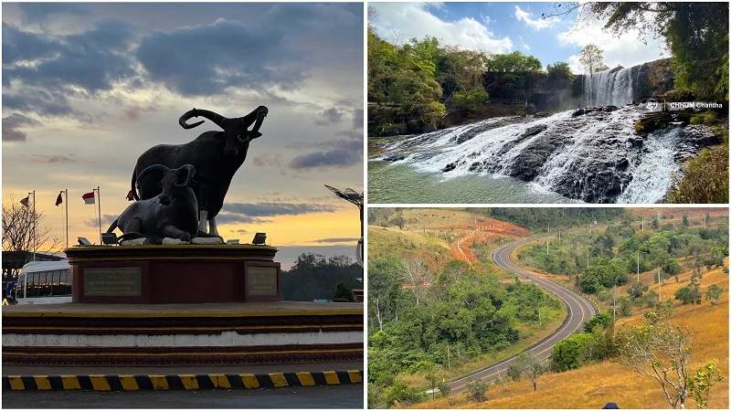
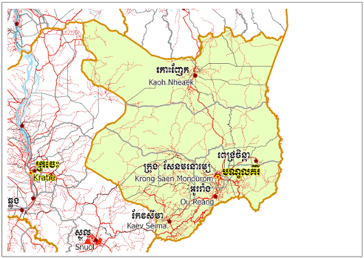
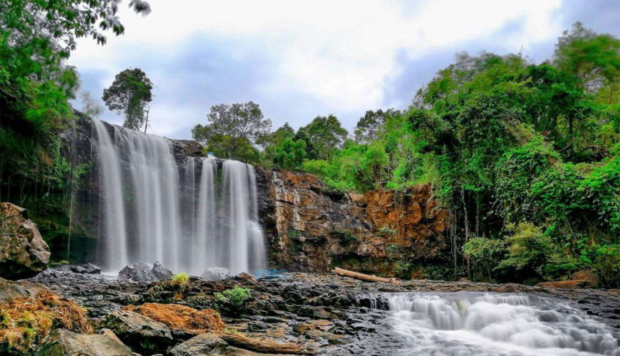
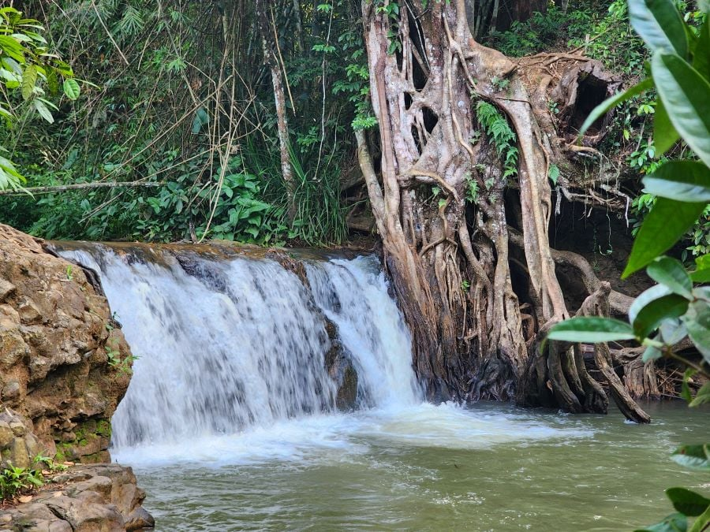

ខេត្តមណ្ឌលគិរី
ខេត្តមណ្ឌលគីរី ជាខេត្តស្ថិតនៅភាគខាងកើតប្រទេសកម្ពុជា។ ខេត្តនេះមានផ្ទៃដីធំជាងគេ តែមានប្រជាជនតិចជាងគេ។ ទីរួមខេត្តឈ្មោះក្រុងសែនមនោរម្យ។ ខេត្តមណ្ឌលគីរីជាតំបន់ទេសចរណ៏ធម្មជាតិ មួយនៃព្រះរាជាណាចក្រកម្ពុជា ដែលមានតំបន់ទេសចរណ៏ធម្មជាតិជាច្រើនដូចជា ទឹកជ្រោះប្រកបដោយហ្វូងមច្ឆាជាច្រើនប្រភេទ ព្រមទាំងរុក្ខជាតិ សត្វព្រៃ ព្រៃកោងកាង និងភ្នំតូចធំជាច្រើន។ ខេត្តមណ្ឌលគីរីជាខេត្តមួយដែលសិ្ថតនៅភូមិភាគឦសាននៃប្រទេសកម្ពុជា ហើយមានចំងាយ ៣៨២គីឡូម៉ែត្រពីរាជធានីភ្នំពេញ និមិត្តសញ្ញានៃខេត្តគឺ តំណាងអោយសត្វគោព្រៃ ដែលជាថនិកសត្វជាតិរបស់កម្ពុជា។ចំពោះចំនួនប្រ ជាពលរដ្ឋសរុបនៅក្នុងខេត្តមណ្ឌលគិរីគឺ៩៣,៤៤១នាក់ ដែលស្មើនឹង២២,២២០គ្រួសារដែល មានដង់ស៊ីតេ ៧នាក់ក្នុងមួយគីឡូម៉ែត្រ។ ប្រជាពលរដ្ឋដែលជាជនជាតិដើមភាគតិចនៅទូទាំងខេត្តសរុប មានចំនួន ៥៣,៤៤៤នាក់ ស្មើនឹង៥៧,២០ភាគរយ នៃប្រជាជនសរុប ដែលមាន ៨ជនជាតិ ក្នុងនោះរួមមាន ៖ជនជាតិព្នង ក្រោល គ្រឹង ស្ទៀង ទំពួន ចារាយ ថ្មួន និងកួយ។

លក្ខណៈភូមិសាស្ត្រ
ខេត្តមណ្ឌលគីរីជាខេត្តមួយដែលសិ្ថតនៅភូមិភាគឦសាននៃប្រទេសកម្ពុជា ដែលមានព្រំប្រទល់ខាងកើតជាប់នឹង ប្រទេស វៀតណាមខាងជើងជាប់នឹង ខេត្តរតនគីរី ខាងជើងឈាងខាងលិចជាប់នឹង ខេត្តស្ទឹងត្រែងខាងលិច ជាប់នឹងខេត្តក្រចេះ ហើយមានចំងាយ ៣៨០គីឡូម៉ែត្រ ពីរាជធានីភ្នំពេញ ដោយធ្វើដំណើរតាមផ្លូវជាតិលេខ៨ ៧ និង៧៦ដោយឆ្លងកាត់តាមខេត្តកណ្ដាល ព្រៃវែង ត្បូងឃ្មុំកំពង់ចាម និងក្រចេះ ផ្លូវដែលអាចធ្វើដំណើរទៅដ ល់ខេត្តមណ្ឌលគីរី បានមានផ្លូវគោក និងផ្លូវអាកាស បើយើង ធ្វើដំណើរតាមផ្លូវគោកយើងនិងឃើញថាកំណាត់ផ្លូវ ពី ភ្នំពេញទៅមណ្ឌលគិរី ជាផ្លូវ កៅស៊ូដែលផ្តល់នូវលក្ខណះងាយស្រួលក្នុងការធ្វើដំណើរ ។ ខេត្តនេះមានអាកាសធាតុខុស ពីខេត្តផេ្សងៗទៀតនៅកម្ពុជា ដោយនៅក្នុងរដូវក្តៅ សីតុណ្ហភាពចាប់ពី ២៧°C ទៅ ៣១°C ដែលអាចចុះត្រជាក់នៅពេ លយប់ ខេត្តមណ្ឌលគីរីជាតំបន់ទេសចរណ៏ធម្មជាតិ ធំមួយនៃព្រះរាជាណាចក្រកម្ពុជា ដែលមានតំបន់ទេសចរណ៏ធម្មជាតិ ជាច្រើនដូចជា ទឹកជ្រោះប្រកបដោយហ្វូងមច្ឆា ជាច្រើនប្រភេទ ព្រមទាំង រុក្ខជាតិ សត្វព្រៃ ព្រៃកោងកាង និងភ្នំតូច ធំ ជាច្រើន។


រដ្ឋបាល
ខេត្តមណ្ឌលគិរី (អង់គ្លេស: Mondul Kiri Province) ស្ថិតនៅ ខេត្ត មាន ៤ស្រុក ១៧ឃុំ និង ៩២ភូមិ÷
- ស្រុកកែវសីមា
- ស្រុកកោះញែក
- ស្រុកអូររាំង
- ស្រុកពេជ្រាដា
- ក្រុងសែនមនោរម្យ
តំបន់ទេសចរណ៍
ទឹកជ្រោះប៊ូស្រាទឹកជ្រោះប៊ូស្រាមានទីតាំងស្ថិតនៅចម្ងាយប្រមាណ ៤៣គីឡូម៉ែត្រពីក្រុងសែនមនោរម្យនៃទីរួមខេត្តមណ្ឌលគិរី តាមបណ្តោយផ្លូវទៅស្រុកពេជ្រចិន្តា។ ទឹកជ្រោះប៊ូស្រាជាតំបន់កំសាន្តល្អជាងគេក្នុងខេត្តមណ្ឌលគិរី។ ខេត្តនេះមានតំបន់ទេសចរណ៍សំខាន់ដូចជា ភ្នំដោះក្រមុំ សមុទ្រឈើ ចម្ការកាហ្វេជាដើម ទឹកជ្រោះនេះចែកចេញជាបីដំណាក់៖
- ដំណាក់ទី១: ហូរធ្លាក់ក្នុងកំពស់ ៨ ទៅ ១២ម៉ែត្រ ដែលមានមុខកាត់ទទឹង ១៥ម៉ែត្រ នៅរដូវវស្សា និង កំពស់ពី១០ ទៅ ១៥ម៉ែត្រ នៅរដូវប្រាំង។
- ដំណាក់ទី២: ហូរធ្លាក់ពីកំពស់ ១៥ ទៅ ២០ម៉ែត្រ និង មុខកាត់ទទឹង ២០ម៉ែត្រនៅរដូវវស្សា និង កំពស់ពី១៨ ទៅ ២៥ម៉ែត្រ ដែលមានមុខកាត់១៣ម៉ែត្រ នៅរដូវប្រាំង។ ទឹកធ្លាក់ទី២នេះ មានចំងាយ១៥០ម៉ែត្រពីទឹកធ្លាក់ទី១។
- ដំណាក់ទី៣: ហូរធ្លាក់ដោយល្បឿនលឿនខ្លាំងជាងល្បាក់ទី២។ ល្បាក់នេះ យើងមិនអាចទៅដល់បានទេ ពីព្រោះជាតំបន់ព្រៃក្រាស់ ខ្វះមធ្យោបាយធ្វើដំណើរ និង តំបន់គ្រោះថ្នាក់នៃពពួកសត្វព្រៃ។

.j.jpg)
កោះទ្រង់ជាសហគមន៍ទេសចរណ៍ធម្មជាតិមួយ ក្នុងចំណោមតំបន់ទេសចរណ៍ពេញនិយមដទៃទៀតនៅខេត្តក្រចេះ។ សម្រស់ធម្មជាតិដ៏ត្រកាល វាលខ្សាច់សក្បុស ទិដ្ឋភាពបន្លែ និងដំណាំផ្សេងៗ របស់ពលរដ្ឋនៅលើកោះទ្រង់ដែលស្ថិតនៅទល់មុខក្រុង ក្រចេះនេះ បន្តទាក់ទាញទេសចរជាតិ និងអន្តរជាតិ ពីទីជិតឆ្ងាយ ឱ្យមកកម្សាន្តជាហូរហែ។កោះទ្រង់ មាន២ភូមិ គឺភូមិក្បាលកោះ និងភូមិចុងកោះ ដែលលាតសន្ធឹងលើផ្ទៃដីទំហំ ២២៣ហិកតា។ កោះនេះ មានពលរដ្ឋប្រមាណ ១ ៧០០នាក់ ភាគច្រើនជាកសិករធ្វើស្រែចម្ការ។ ពលរដ្ឋមួយចំនួនទៀត ផ្តល់សេវាបដិសណ្ឋារកិច្ច រៀបចំផ្ទះស្នាក់ និងចម្អិនអាហារសម្រាប់ទេសចរ។ របរតូចតាចផ្សេងទៀត ដូចជាការដាំបន្លែក្នុងរោងតូចៗ និងការធ្វើនេសាទ ក៏រួមចំណែកដោះស្រាយជីវភាពប្រជាជនខ្លះទៀតនៅលើកោះនេះដែរ។ ដើម្បីទៅកម្សាន្តនៅដែនកោះដែលស្ថិតកណ្តាលទន្លេមេគង្គនេះ អ្នកទេសចរត្រូវជិះទូកដរ ដែលសំចតអែបច្រាំងរង់ចាំចម្លងមនុស្សម្នាទៅមកជារៀងរាល់ថ្ងៃ។ សេវាកម្មទូកចម្លង ដែលមធ្យោបាយធ្វើដំណើរជាប្រចាំរបស់ពលរដ្ឋរស់នៅលើកោះទ្រង់នេះ មានតម្លៃ១ពាន់រៀល។
រមណីយដ្ឋានទឹកជ្រោះលែងឃិនស្ថិតនៅ ភូមិពូហ្យាម ឃុំសែនមនោរម្យ ស្រុកអូររាំង ខេត្តមណ្ឌលគិរី។ រមណីយដ្ឋានទឹកជ្រោះលែងឃិន ពុំទាន់រៀបចំរចនាសម្ព័ន្ធគ្រប់គ្រងនៅឡើយ។ រមណីយដ្ឋាន ទឹកជ្រោះលែងឃិន មាន ទឹកជ្រោះ ធម្មជាតិ ព្រៃភ្នំ ខ្យល់អាកាសល្អស្រស់ត្រកាល និងមានភ្នំជាច្រើន ។ ទឹកជ្រោះលែងឃិនមានល្បាក់ទឹកធ្លាក់កំពស់ប្រហែល ២២-២៥ម និងមុខកាត់ទទឹងប្រហែល ៧-១០ម នៅរដូវវស្សា និងរដូវប្រាំងមុខកាត់ទទឹងប្រហែល ៨ម តែប៉ុណ្ណោះ ។ រមណីយដ្ឋានទឹកជ្រោះលែងឃិនជារមណីយដ្ឋានដែលមានទឹកជ្រោះហូរធ្លាក់កំពស់ខ្ពស់ជាងគេនៅក្នុងខេត្ត ។ ទឹកនេះហូរជាល្បាក់ជម្រាល ផ្នែកខាងក្រោមមានអាងស្ដុកទឹកយ៉ាងធំដែលអាចហែលងូតលេង និងមានដើមឈើធំៗជាម្លប់ យ៉ាងត្រជាក់។
